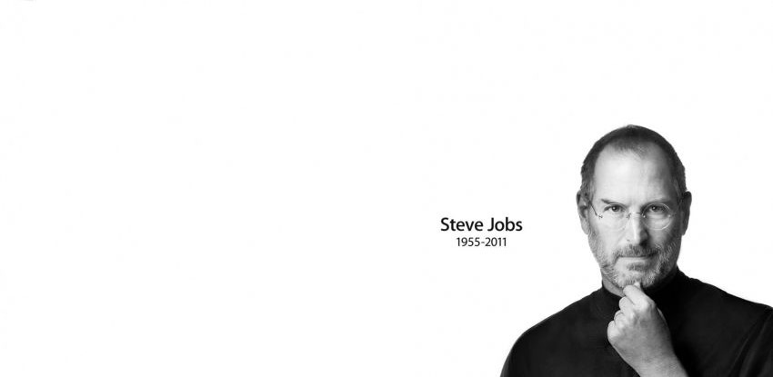

Steve Jobs
1955-2011

Biography
Steven Paul Jobs was an American business magnate, inventor, and investor. He was the co-founder, chairman, and CEO of Apple; the chairman and majority shareholder of Pixar; a member of The Walt Disney Company's board of directors following its acquisition of Pixar; and the founder, chairman, and CEO of NeXT. He was a pioneer of the personal computer revolution of the 1970s and 1980s, along with his early business partner and fellow Apple co-founder Steve Wozniak.
- Steve Jobs was born 24 February 1955 in San Francisco, California, United States to a Syrian father and German-American mother. He was adopted shortly after his birth. Jobs attended Reed College in 1972 before withdrawing that same year. In 1974, he traveled through India seeking enlightenment before later studying Zen Buddhism. He and Wozniak co-founded Apple in 1976 to sell Wozniak's Apple I personal computer. Together the duo gained fame and wealth a year later with production and sale of the Apple II, one of the first highly successful mass-produced microcomputers.
- Jobs's design aesthetic was influenced by philosophies of Zen and Buddhism. In India, he experienced Buddhism while on his seven-month spiritual journey,[228] and his sense of intuition was influenced by the spiritual people with whom he studied.[228] He also learned from many references and sources, such as modernist architectural style of Joseph Eichler,[citation needed] and the industrial designs of Richard Sapper[229] and Dieter Rams.[citation needed]
- In 1989, Jobs first met his future wife, Laurene Powell, when he gave a lecture at the Stanford Graduate School of Business, where she was a student. Soon after the event, he stated that Laurene "was right there in the front row in the lecture hall, and I couldn't take my eyes off of her ... kept losing my train of thought, and started feeling a little giddy".[8][page needed] After the lecture, he met her in the parking lot and invited her out to dinner. From that point forward, they were together, with a few minor exceptions, for the rest of his life.
- Chrisann Brennan notes that after Jobs was forced out of Apple, "he apologized many times over for his behavior" towards her and Lisa. She said Jobs "said that he never took responsibility when he should have, and that he was sorry".[275] By this time, Jobs had developed a strong relationship with Lisa and when she was nine, Jobs had her name on her birth certificate changed from "Lisa Brennan" to "Lisa Brennan-Jobs".[7] Jobs and Brennan developed a working relationship to co-parent Lisa, a change which Brennan credits to the influence of his newly found biological sister, Mona Simpson, who worked to repair the relationship between Lisa and Jobs.[7] Jobs had found Mona after first finding his birth mother, Joanne Schieble Simpson, shortly after he left Apple.
- In October 2003, Jobs was diagnosed with cancer. In mid-2004, he announced to his employees that he had a cancerous tumor in his pancreas.[157] The prognosis for pancreatic cancer is usually very poor;[158] Jobs stated that he had a rare, much less aggressive type, known as islet cell neuroendocrine tumor. Jobs resisted his doctors' recommendations for medical intervention for nine months,[159] in favor of alternative medicine. According to Harvard researcher Ramzi Amri, this "led to an unnecessarily early death".
- Jobs died at his Palo Alto, California, home around 3 p.m. (PDT) on October 5, 2011, due to complications from a relapse of his previously treated islet-cell pancreatic neuroendocrine tumor,[60][203][204] which resulted in respiratory arrest.[205] He had lost consciousness the day before and died with his wife, children, and sisters at his side.